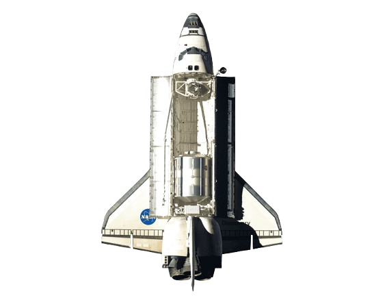
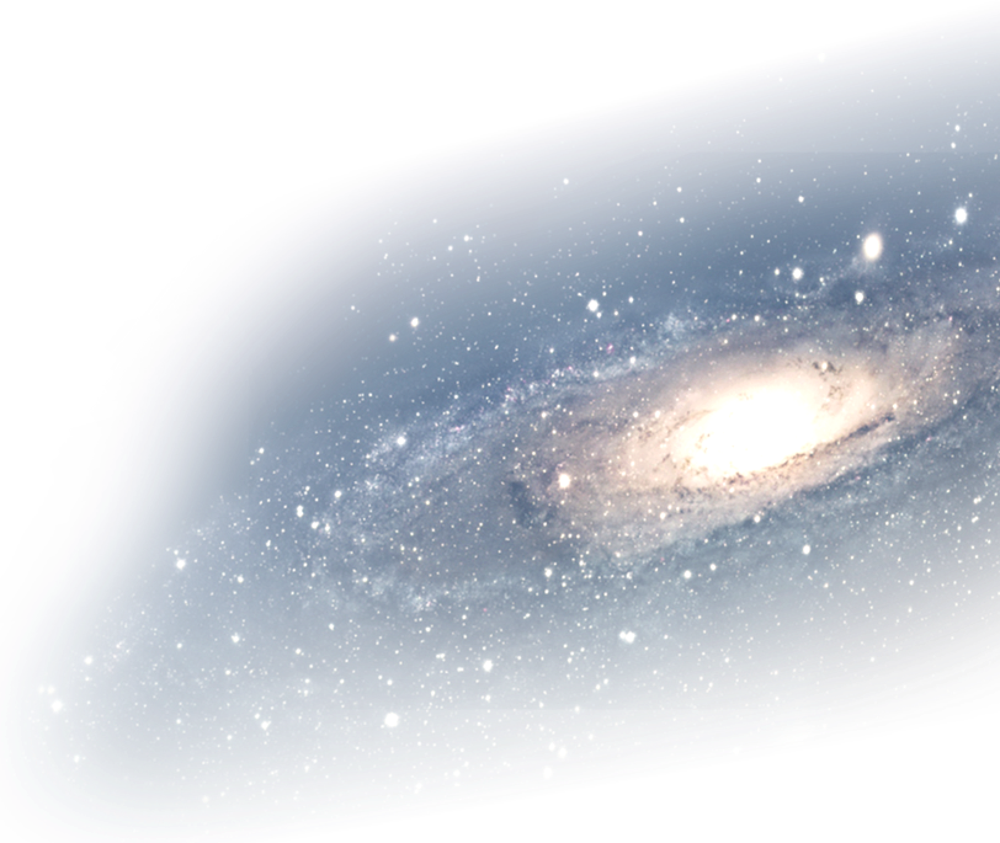
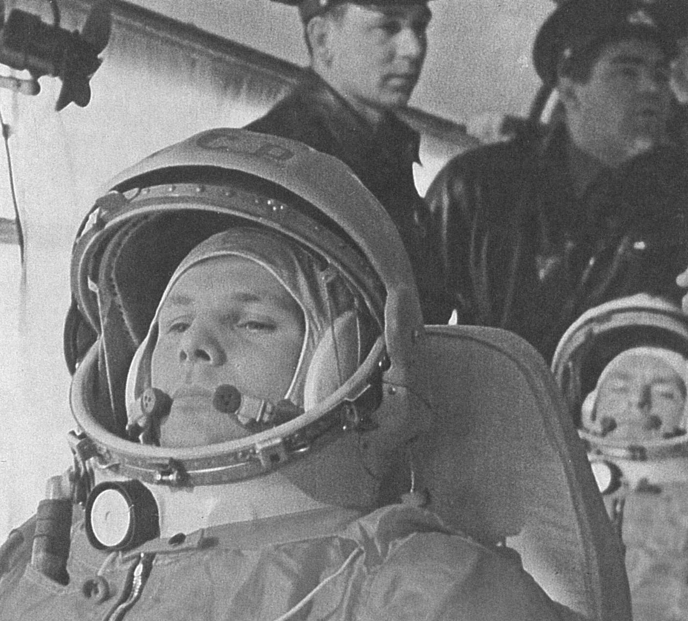
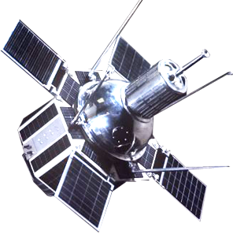
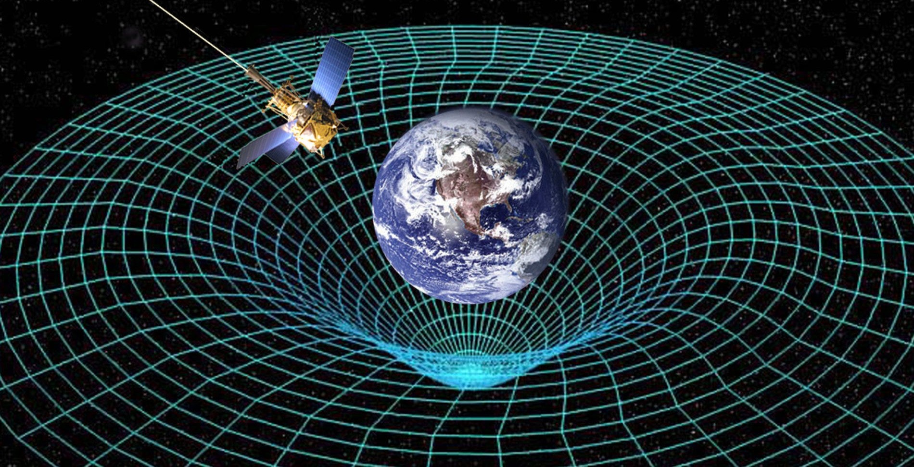
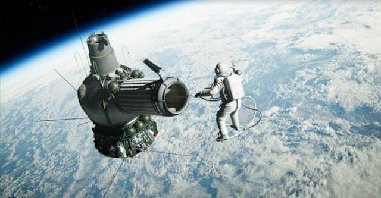
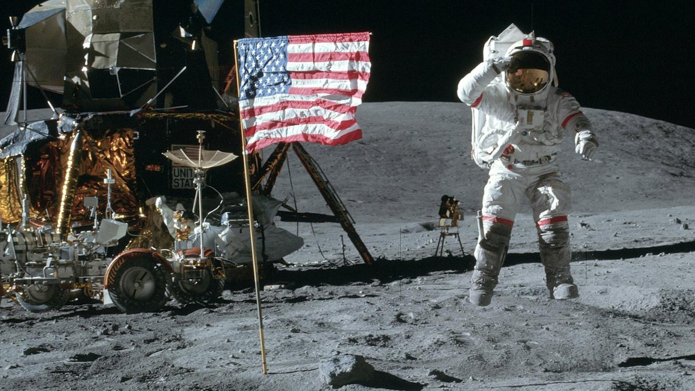

1961
Yuri Gagarin, um cosmonauta soviético, foi o primeiro ser humano a viajar para o espaço, a bordo da Vostok 1, em 12 de abril de 1961. Sua missão de 108 minutos o levou a orbitar a Terra, fazendo dele um herói nacional e uma celebridade internacional, marcando o início da era dos voos espaciais tripulados.
1964
Década de 1960 – Primeiras evidências observacionais de buracos negros
Embora as bases teóricas dos buracos negros já existissem desde a Teoria da Relatividade Geral de Einstein, foi somente nos anos 1960 que começaram a surgir provas observacionais. Nesse período, a astronomia ganhou um novo aliado: a astronomia de raios-X, graças a foguetes e satélites capazes de detectar radiação de alta energia vinda do espaço.
Em 1964, uma equipe de astrônomos descobriu uma intensa fonte de raios-X na constelação do Cisne (Cygnus), que recebeu o nome de Cygnus X-1. Investigações posteriores mostraram que essa emissão vinha de uma estrela massiva orbitando um objeto invisível, extremamente denso, cuja gravidade sugava matéria da companheira. Esse processo aquecia o gás a temperaturas altíssimas, emitindo radiação em raios-X.
1965
Primeira caminhada espacial:
Alexei Leonov tornou-se o primeiro ser humano a flutuar fora de uma nave, durante a missão Voskhod 2. O feito, arriscado e histórico, mostrou que era possível sobreviver e se movimentar no espaço, abrindo caminho para futuras operações extraveiculares e construção de estações espaciais.
1969
Homem na Lua:
Neil Armstrong e Buzz Aldrin foram os primeiros humanos a pisar na Lua, enquanto Michael Collins orbitava o satélite. Esse marco representou o ápice da corrida espacial, trouxe importantes dados científicos e inspirou gerações, mostrando que a exploração de outros corpos celestes era possível.







